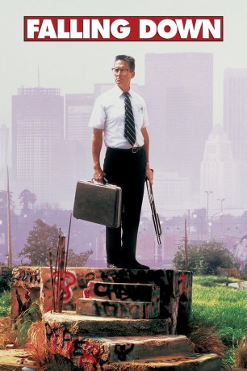

#4595 Falling Down - Ein ganz normaler Tag
 
 IMDB-Wertung: 7.6 / 10
IMDB-Wertung: 7.6 / 10  Metascore: 0
Metascore: 0 
Der Angestellte William Foster, der nur über sein Nummernschild "D-Fens" identifiziert wird, will an einem heißen Tag zur Geburtstagsparty seiner Tochter fahren. Doch es ist ein schlechter Tag: er sitzt im Stau, die Leute sind wütend, er ist geschieden und darf seine Tochter eigentlich gar nicht sehen. Da steigt D-Fens einfach aus seinem stehenden Auto aus und macht sich zu Fuß auf den Weg, eine Odyssee, die ihn an all dem vorbeiführt, was er haßt und was ihn aufregt. Als erstes muß ein ausländischer Ladenbesitzer dran glauben, der ihm kein Kleingeld geben will. D-Fens zertrümmert den Laden und setzt seinen Weg fort. Bald schon erhält er bei einem illegalen Waffenhändler ausreichend Gelegenheit, sich schwer zu bewaffnen und bahnt sich den Weg durch die Großstadt. Die willkürliche Anhäufung von unterschiedlichen Gewalttaten fällt ausgerechnet dem Polizisten Prendergast auf, der seinen letzten Diensttag feiert...
Jahr: 1993
Dauer: 112 Minuten
FSK: 16
Land: Frankreich Studio: Warner Bros.Tonspuren: DD5.1 - ,
Untertitel:
Auflösung: 1080p (1920x800) Größe: 8284 MB
Genre: Krimi, Drama, Thriller
Regisseur:  Joel Schumacher
Joel Schumacher
Drehbuch: Andy Samberg
Soundtrack:
Darsteller:
 Michael Douglas als D-Fens
Michael Douglas als D-Fens Robert Duvall als Prendergast
Robert Duvall als Prendergast Barbara Hershey als Beth
Barbara Hershey als Beth Rachel Ticotin als Sandra
Rachel Ticotin als Sandra Tuesday Weld als Mrs. Prendergast
Tuesday Weld als Mrs. Prendergast Frederic Forrest als Surplus Store Owner
Frederic Forrest als Surplus Store Owner Lois Smith als D-Fens' Mother
Lois Smith als D-Fens' Mother Ebbe Roe Smith als Guy on Freeway
Ebbe Roe Smith als Guy on Freeway Michael Paul Chan als Mr. Lee
Michael Paul Chan als Mr. Lee Raymond J. Barry als Captain Yardley
Raymond J. Barry als Captain Yardley D.W. Moffett als Detective Lydecker
D.W. Moffett als Detective Lydecker Kimberly Scott als Detective Jones
Kimberly Scott als Detective Jones James Keane als Detective Keene
James Keane als Detective Keene Macon McCalman als Detective Graham
Macon McCalman als Detective Graham Bruce Beatty als Police Clerk
Bruce Beatty als Police Clerk- Julian Scott Urena als Gang Member Four
- Karina Arroyave als Angie
- Benjamin Mouton als Uniformed Officer at Beth's
 James Morrison als Construction Sign Man by Bus Stop
James Morrison als Construction Sign Man by Bus Stop- John Fleck als Seedy Guy in Park
- Dedee Pfeiffer als Sheila, Whammyburger
 Vondie Curtis-Hall als Not Economically Viable Man
Vondie Curtis-Hall als Not Economically Viable Man- Spencer Rochfort als Second Gay Man
 Carole White als Second Officer at Beth's
Carole White als Second Officer at Beth's John Fink als Guy Behind Woman Driver
John Fink als Guy Behind Woman Driver Jack Betts als Frank, Golfer
Jack Betts als Frank, Golfer John Diehl als Dad, Back Yard Party
John Diehl als Dad, Back Yard Party Amy Morton als Mom, Back Yard Party
Amy Morton als Mom, Back Yard Party- Susie Singer Carter als Suzie the Stripper
 Wayne Duvall als Paramedic
Wayne Duvall als Paramedic- Jeffrey Byron als CHP Officer , uncredited
- Joey Hope Singer als Adele, Beth's Child
 Steve Park als Detective Brian
Steve Park als Detective Brian- Richard Montoya als Detective Sanchez
- Matthew Saks als Officer at Station
- Agustin Rodriguez als Gang Member One
- Eddie Frias als Gang Member Two
- Pat Romano als Gang Member Three
- Irene Olga López als Angie's Mother
- Dean Hallo als Uniformed Officer's Partner
- Brent Hinkley als Rick, Whammyburger
- Carole Androsky als Woman Who Throws Up, Whammyburger
- Margaret Medina als Lita the Waitress
- Mark Frank als Annoying Man at Phone Booth
- Peter Radon als First Gay Man
- Russell Curry als Second Officer's Partner
 Jack Kehoe als Street Worker
Jack Kehoe als Street Worker- Valentino D. Harrison als Kid, with Missile Launcher
 Al Mancini als Jim, Golfer
Al Mancini als Jim, Golfer- Abbey Barthel als Trina, Back Yard Party
Datei: X:\1993\Falling Down - Ein ganz normaler Tag (1993, FSK16, 1920x800).mkv seit 20.10.2016
Festplatte: HD 1992-1995
 Es gibt insgesamt 68 Filme in der Gruppe '1993'
Es gibt insgesamt 68 Filme in der Gruppe '1993'